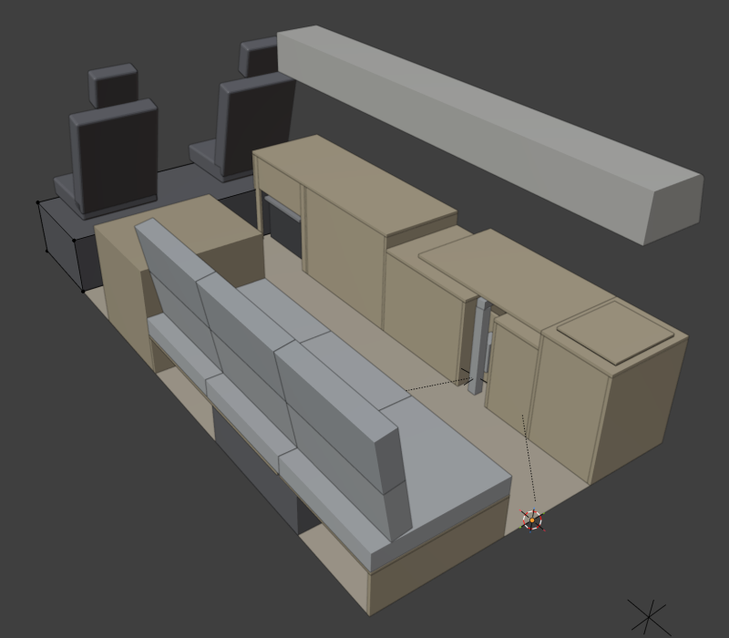
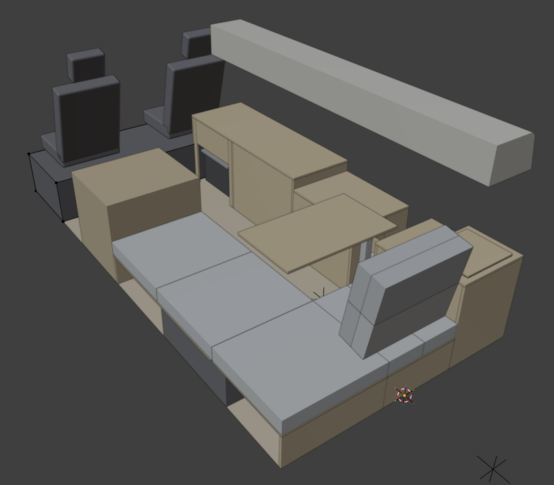
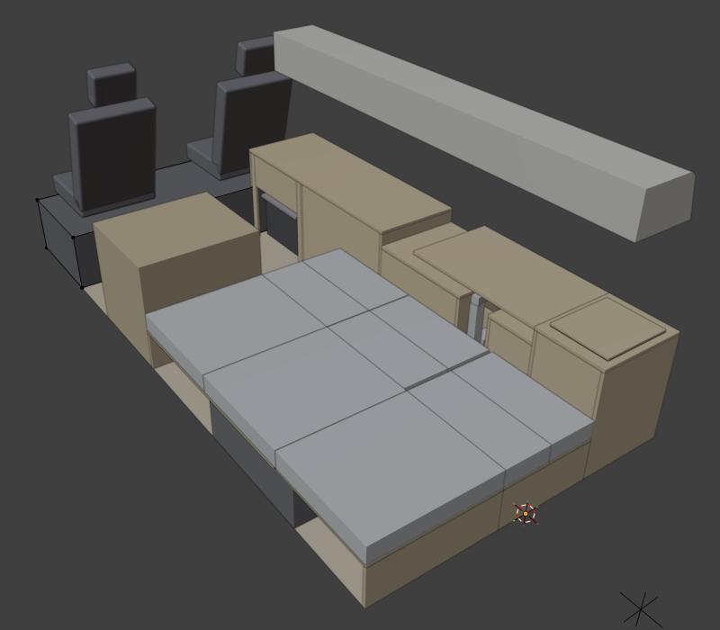

Blenderのモデル（バックドア側から見た斜め上）。シンクは蓋を閉じた状態。
Blenderモデルの寸法から自動で描いた図。部品にカーソルを合わせると名前と座標が出ます。
| 項目 | 内容 | 状態 |
|---|---|---|
| 車両寸法 | 全長4840 / 全高2105 / 荷室長3000 / 荷室幅1730 / 荷室高1390 | カタログ・確認済 |
| 天井の幅 | 約1550mm（実測） | 実測 |
| タイヤハウス | 後部から500〜1220、壁から210、高さ220（左右同じと仮定） | 実測（左右同一は仮定） |
| エンジンルーム段差 | 後部から2900、高さ350、上面の奥行200の先に前席 | 実測 |
| アッパーキャビネット（運転席側） | 奥行350 × 高さ230、後部50〜2724（運転席の150mm手前まで） | 決定 |
| 机・テーブルの高さ | 全テーブルの天板を629mmに統一（10-09変更、旧613）。スイベルテーブルの実物（支柱550・アーム40・回転テーブル台27・テーブル12）を床に直置きした高さに合わせた。座面（クッション110mmで座面高350、座って約320）との差は約310で、食事・作業の目安（270〜300）より約1cm高い（10-12にクッションを100→110mmに変更） | 決定（10-09） |
| ソファベッド | 長さ1900、座面の奥行700、座面高350（箱240＋クッション110、10-12に100から変更）。ベッド時は机の前面まで1230mm | 決定 |
| ベッド時の引き出し量 | 530mm（1230 − 700） | 決定 |
| 背もたれクッション | 265 × 110 × 約630を2枚で1組（ソファ時は縦に積んで高さ530、ベッド時は横に並べて530を埋める）。80° | 決定 |
| 冷蔵庫 | 10-22実測：LITAKE（2室式）。不要な車輪と取っ手を外した実測で 前後680×奥390×高535（10-19のカタログ外寸730×460×560から更新）。10-22機構：680を前後方向にし、取っ手のボルト穴を使ってスライドレール（NECILO 450mm、引き出し445、厚12.7、幅45）を前後の端面に直付け（上面から150下、2本ずつ）。レールは壁〜通路側の端（-865〜-415）いっぱいで、前板は冷蔵庫の幅680にしてレールの間に収める。下に12mm合板の底板（680×390）とボールベアリングのキャスター4個（3Dプリント、台座を底板裏にねじ止めしベアリングが床を転がる、φ19ベアリングは仮定）。冷蔵庫ブロックの奥行は450。壁側に後板（12mm、高さ217〜617で上端ツライチ、下は約200あき、レールの後端の所を切り欠き）。運転席の後ろ（後部2107〜2787）。旧：M.O.L MOL-PF600DB（750×400×555） | 決定 |
| 運転席後ろの床下収納（既存） | 壁から50離れて、後部1610〜2680（長さ1070）。幅はエンジン側160→タイヤハウス側130、深さ350。冷蔵庫のレール（2205〜2245）・仕切り板（2122〜2140）がふたの上に乗るため。電子レンジの下（1610〜2122）からはふたに手が届く。、ふたの分け方か配置の見直しが必要 | 実測（10-07） |
| 冷蔵庫のスライド | YENUO 重量用スライドレール 500mm（Amazon B08BHPHYGY、幅53×厚19、フルエクステンション、横付け最大120kg、左右1組、ロック有無を選べる。取付ねじ・金具は別売）を床に寝かせて付ける。水平使いの荷重はメーカー記載なし、横付けの1/4（30kg）を目安とする。冷蔵庫はアルミアングル2本の枠に載せ（底板なし、冷蔵庫に穴は開けずベルト固定）、通路側のアングルの下に薄型キャスター2個（レールの外側、取付高さ19mm以内）を付け、引き出したときの先端を床で支える。レールは主にガイド役。前板の下まで通して約500mm引き出し、冷蔵庫の壁側の端を天板の端（Y−365）より外へ出す。冷蔵庫は壁に付けたまま（ふたの蝶番は壁側）。重さ約19kg＋中身 | 決定（10-08） |
| 跳ね上げ天板の取付け | 冷蔵庫は車体の壁すぐ（背面−860）に置く。左右の板（仕切り板2110〜2122、12mm・前端の板2882〜2900）の上端を601に下げ、その上に桟40×12（Y−865〜−825）と12mm合板の天板（2116〜2900、Y−824〜−365、幅784）を載せる。仕切り板の上端はレンジ側の天板と6mmずつ分け合う。桟と天板は同じ板から切り出し、丁番2個（2250・2754付近）でつなぐ。天板は左右の板の上端で奥まで全長受ける。80°で止めると冷蔵庫のふたは約46°まで開く（天板を629に上げたため、10-09時点。34°から改善）（ふたの壁側が桟の下に35mm入るため。ふたの蝶番が背面の上端、ふた厚60mmの仮定）。桟を20mmにすると約51° | 仮（10-08） |
| 電子レンジ | Panasonic NE-UBS10D（494×435×370、たて開き、取っ手込み奥行486）。10-09に助手席側の収納ブロック（10-22から1950〜2474）へ移動。扉は通路側、収納ブロックの上部に収め、上に12mmの天板（601〜613）を付ける。前方寄せ（1968〜2462、高さ231〜601）。上面が天板に接するため、メーカー指定の上方80mmは天板の排気部分のくり抜き等で確保する必要あり。取っ手の先を収納ブロックの前面（Y165）に揃える。運転席側の元のレンジブロックは空き（用途未定） | 仮（10-09） |
| 収納ブロック（電子レンジ、助手席の後ろ） | 10-22変更：1950〜2474（前後524＝電子レンジの幅494＋側板12×2＋すき間6）、Y165〜860（奥行695）。12mm合板の箱（天板・左右の側板・背板）。電子レンジは棚板（219〜231）の上、運転席側の側板に寄せて置く（左横のすき間6）。電子レンジの後ろ（Y651〜663）と下段の同じ位置に間仕切り。引き出し3つ：①上段奥（電子レンジの後ろ、Y663〜848、高さ231〜601）と②下段奥（同、高さ0〜219）は運転席側（スライドドア側）へ引き出す。エンジンケースに当たるまで約420mm引き出せる（箱の長さ498の約8割）。③下段手前（Y165〜651、高さ0〜219）は通路側へ引き出す。電子レンジが重いため、③の空間の左右と奥に12mm合板の補強板（高さ0〜219、棚板を下から支える）を入れ、③の箱は左右・奥で12ずつ小さい（1976〜2448、Y177〜637）（10-22） | 仮（10-09） |
| シンク | TORVA RV Kitchen Sink（外形330×381×深さ178）。テーブル4に埋め込み、普段は蓋を閉じる | 検討中（8ナンバー要件） |
| 水タンク | Flou 10L（展開時220×220×280）を給水・排水で2個、テーブル4の下 | 検討中 |
| スイベルテーブル（テーブル3） | 850 × 500、天板613。収納時の端（1325）とレンジブロックの天板（1588）の間263mmは回転の通り道で、今の金具ではテーブルを長くできない（総当たりで確認、850が上限）。2関節の折りたたみ式ブラケット。支柱は後部860・机前面の内側。支柱の中心はリアドアから840、窓から450（10-09に決定）。回転台はほぼ天板の中心（長さ方向に6mmだけ前、10-11）。そのため支柱の中心をリアドアから625、窓から450に移した（10-11、以前は790）。収納位置は425〜1275（テーブル4の天板の端424とそろう、壁から0.5mm、アーム約−41°）。前側は回転の通り道で、収納時の前端1275から150mmあけ、シンクブロック全体（天板・仕切り板・引き出し）を1425〜2116にした（10-11。出せる限界は1358＝必要な隙間83mm）。出し方：アームを約30°まで回す→天板を回しながらアームを約80°へ。オフィス時はアーム約79°、横向きでL字ソファの座面（前端631）に20cm重ねる（テーブル431〜931、Y−534〜316。長い辺の座面にも15cm重なる）。出し入れの途中でシンクの天板・食材収納ブロックの天板（横の余裕8mm以上）・棚天板・目隠し板に当たらないことを確認。出し入れの途中で他の部品に当たらないことを確認済み。10-20実測：支柱の中心はリアドアから670、窓から455（設計680より約10mmリアドア側。回転台を天板上で10mmリアドア側へ寄せて天板の位置は設計どおりにする）。10-16現在：支柱の中心はリアドアから680、窓から455（Y−410）。回転台は天板の中心から40ずらし、テーブルは0°（窓と平行）のまま出す。収納432〜1282（アーム約−53°）、ソファ時はアーム90°で座面（前端165）に20mm乗る、オフィス時はアーム約79°でテーブル446〜946（L字座面に約19cm重なる）。0°のまま出すとアーム55〜57°の間だけテーブル4の天板の角に数mm当たるので、その間だけ手でテーブルを少し（1°以上）回して通す運用（10-16決定） | 決定（アーム長は仮定） |
| スイベルテーブルの支柱の固定 | 10-16変更：引き出しB2左の側板（Shelf_B2_SideL、12mm、X715〜727）に留める。支柱の前（リアドアから遠い側）の面に支柱付属のスライド板（90×170、厚さ約5）を向け、かませ板（厚さ約4.7、スライド板の実測で調整）を挟んで側板に付属のM8皿ボルト4本（穴は縦140×横50）で固定し、側板の裏（引き出し側）に付属の裏板（アルミ約2.5mm）を当てる。ボルトの頭は引き出し側に出るので、下段の引き出しの箱を10mm短くした。スライド板の前端を前板の面（Y−365）にそろえるため、支柱を窓側へ5.5mm移した。床の固定は別途検討（車体のM10穴は2つ：リアドアから560と810、どちらも右端から475が中心）。 旧案（10-09）：M10穴に鉄6mmのL字ブラケットを留め、その立板にスライド板を付ける | 案（10-16） |
| ソファベッド3（L字）の張り出し | 後部0〜633、机前面〜Y165（530）。ソファベッド1・2と同じく取り外し式。クッションは530（265×2） | 決定（10-06） |
| SUPバッグ | 920 × 420 × 220。張り出しを付けた状態でソファベッド3の下に収納（バックドアから出し入れ）。検査には持って行かない | 決定 |
| ブロック | 範囲（後部から） | 内容 |
|---|---|---|
| シンク | 0〜474 | シンク（蓋付き）、下に10Lタンク×2。リアドア側の板を扉にしてリアドアからアクセス。内寸438（10-08にレンジブロックを詰めた分を吸収） |
| スイベルテーブル | 424〜1425 | 棚天板（高さ522〜540、1枚、支柱の部分598〜652を切り欠き）の下全体を1つのブロックとする（10-11に組み直し）。後ろから：支柱スペース424〜715（支柱655〜705、10-16に縮めた）。前面は目隠し板（12mm）で覆う：上段424〜715、下段424〜705（支柱のスライド板の手前まで）／側板715〜727（支柱のスライド板を固定）／引き出しB2 727〜1425（前板729〜1411、10-16に126mm広げた。上下2段。棚板を342〜360に上げ、上段の前板360〜520はベッド上面350＋10mmより上なのでベッド時も全開450できる（10-12にクッション110mmに合わせて10mm上げた）。上段の箱は高さ154（363〜517、740〜1400）、下段の箱は20〜325（740〜1410、裏板とボルトの頭をよけて上段と同じ位置から）、下段の前板は10〜358。上段はスライドレールをやめた（10-15）。下段はベッド時は開かない）。収納時のテーブルは432〜1282 |
| 食材収納 | 1606〜2130 | 電子レンジを収納ブロックへ移したため棚にする。内寸524（10-19に冷蔵庫ブロックを20詰めた分を延長）、棚板207〜225、前面は前板（12mm、0〜601）で閉じる。天板は12mm（1588〜2136、高さ601〜613） |
| 冷蔵庫 | 2142〜2882 | 冷蔵庫（スライド引き出し）。仕切り板2130〜2142（12mm、天板と6mmずつ共有）、前端の板2882〜2900（床から）。上の天板は窓側の丁番で跳ね上げ |
テーブル3（スイベル）は収納時、テーブル4とキッチン天板の間（後部432〜1282）に一直線に収まります。持ち上げずにL字ソファ前へ出せることを、出し入れの経路全体で確認済み（レンジブロックの天板の後端は後部1588、経路との最小すき間5mm）。
寸法はmm。位置はバックドアからの距離。冷蔵庫はアルミアングルの枠に載せ、枠をスライドレールの可動側に固定する。冷蔵庫本体には穴を開けず、ベルトで枠に固定する。アングル5本で冷蔵庫の四方を囲む枠にし、左右のアングルをブロック幅いっぱいに置いたレールの動く側に全長で留める。前板・枠・冷蔵庫が一体で動く。前板の上部は、左右の支えで冷蔵庫本体の前面上部と面ファスナーで留める。
冷蔵庫は半透明で表示。濃いグレーがレール（床に寝かせて固定）、薄いグレーがアルミアングル（四方）、オレンジが前板の裏の支え（左右）、黒が面ファスナー、黄色がポケット、黒丸がキャスター。青の点線は500mm引き出したとき。
天板は、左右の板の上に載せた桟（40×12、天板と同じ板から切り出し）に丁番で取り付ける。80°に立てると、冷蔵庫のふたは約34°まで開く（ふたの蝶番が背面の上端、ふた厚60mmの仮定）。
通路側のアングルと前板の裏のアングルは、左右のアングルでつながる。前板の上部は、裏の左右の端に付けた支え（高さ462〜488）を冷蔵庫本体の前面上部（ふたの下）に面ファスナーで留めて支える。支えの間は空けて、冷蔵庫と前板の間（奥行77、幅626、高さ約560）を上から物を入れるポケットにする。底はアルミ板3mm。冷蔵庫が縦の支柱になり、前板は下端と上部の2か所で支えられる。キャスターは前板の裏のアングルの下。
レールは3段（固定側・中間・動く側）。固定側はブロック内の床にねじ止めし、中間が+250、動く側が+500まで伸びる。左右のアングルを動く側の上に重ね、赤丸の位置（約90mm間隔、片側6か所）で留める。オレンジの線は天板の通路側の端。
レールの内部は模式図。左右のアングルの水平な面を、レールの動く側の部材の上に載せ、皿ねじM4で留める（頭はアングルの上面と平らにし、冷蔵庫を浮かせない）。ナットはレールの中にあるので、レールを引き出した状態で固定側の作業穴から締める。レールの取付け穴の位置と大きさは商品ページに記載がなく、届いてから確認する。
| 部品 | 寸法・仕様 | 数 | 状態 |
|---|---|---|---|
| スライドレール | YENUO 重量用 500mm（幅53×厚19、フルエクステンション）。床に寝かせて固定。ブロックの幅いっぱい（2122〜2175・2829〜2882、芯々707）。ロック付きを推奨 | 1組（2本） | 決定 |
| アルミアングル（枠） | 30×30×3。長さ750を3本（壁側Y−863〜−833・通路側Y−487〜−457・前板の裏Y−407〜−377）、長さ486を2本（左右、立ち上がりは冷蔵庫の外側、仕切り板とのすき間約2mm）。四方の立ち上がりで冷蔵庫を囲む。左右のアングルをレールの動く側に皿ねじ（またはリベット）で全長にわたって留める。角は切り欠きか留め加工 | 5本 | 仮 |
| 前板の裏の支え | 角材 60×77×26、左右の端（2129〜2189・2815〜2875、高さ462〜488）。前板の裏にねじ止め。取っ手の両端のねじを受ける | 2個 | 仮 |
| ポケットの底板 | アルミ板3mm、746×77（Y−457〜−380、高さ22〜25）。前板の裏のアングルに載せ、通路側のアングルの立ち上がりに留める | 1枚 | 仮 |
| 面ファスナー | 3M デュアルロック等。左右の支えの冷蔵庫側（2129〜2189・2815〜2875）と、冷蔵庫本体の前面上部（ふたの下）に貼る。ふたの閉まりや前面の操作部を邪魔しない位置を実物で確認 | 2組 | 未選定 |
| プッシュオープン | 取っ手はやめ、押して開く方式にする（プッシュオープン付きのレール、または仕切り板にプッシュラッチ）。カーブで冷蔵庫が壁側へ押されると開くおそれがあるので、走行中は別のロック（スライドボルト等）で止める | 一式 | 未選定 |
| 薄型キャスター | 取付高さ19mm以内。前板の裏のアングルの下、レールの内側（2200・2800）。引き出したときに先端を床で支える | 2個 | 未選定 |
| 前板 | 760×569（高さ20〜589）。前板の裏のアングルにねじ止め | 1枚 | 仮 |
| 固定ベルト・ストッパー | 冷蔵庫を枠に固定（左右方向のずれ止めと浮き上がり防止）。ふたの開閉を妨げない位置に通す | 一式 | 未選定 |
| 跳ね上げ天板 | 12mm合板 784×459（2116〜2900、Y−824〜−365）。左右の板の上端に載る（仕切り板には6mm） | 1枚 | 仮 |
| 跳ね上げ天板の補強（10-13） | アルミアングル 20×20×2、長さ756（2124〜2880）。天板の裏の通路側の縁（Y−399〜−379、前板の裏から2mm離す）にビスで留める。しなりを抑えるため（12mmのままでも18mm相当の硬さの概算。ふたの開く角度は変わらない）。天板と一緒に回り、0〜90°で干渉なし | 1本 | 仮 |
| 桟（丁番の固定側） | 40×12、長さ784（2116〜2900、Y−865〜−825、高さ601〜613）。天板と同じ12mm合板から切り出し、左右の板の上に載せて固定 | 1本 | 仮 |
| 丁番 | 40mm程度、天板の上面側に2個（2250・2754付近）。固定側の羽根は桟の上面（幅20）に収まる大きさ | 2個 | 未選定 |
| 仕切り板・前端の板 | 仕切り板は12mm合板（2110〜2122）で、上端601に冷蔵庫側の天板とレンジ側の天板が6mmずつ載る。前端の板は高さ0〜601（上端で天板と桟を受ける）、奥行500。前端の板は床から立ててエンジンケースに載せない | 各1枚 | 仮（前端の板はモデル上18mm） |
根拠: 国土交通省「用途区分通達 細部取扱い」現行版（kubun-3-4-80.pdf）、近畿運輸局 構造要件チェックシート。2022年4月改正で室内高が緩和。
エ 洗面台等を利用するための床面から上方には有効高さ1,600mm（洗面台等の上端（蛇口、レバー及び浄水器等、水を供給する構造を除く。）が、これを利用するための床面から上方に850mm以下の場合にあっては1,200mm）以上の空間を有していること。
| 要件 | 基準 | このレイアウト | 判定 |
|---|---|---|---|
| 台の高さ | 850mm以下なら上方1,200mmでよい | 天板613 | 適合 |
| 上方の有効高さ | 利用する床面（奥行300×幅500以上）から1,200以上。台の上から天井までは問われない | キッチン前の通路: 1390。シンク前（テーブル4）: ソファ時は張り出しを外して床（奥行530×幅633）、1390 | ソファ時で適合の見込み |
| 利用位置 | 正対して使え、間に他の設備がなく、床面に著しい段差がない | ソファ時はシンク前が床。オフィス・ベッド時は張り出しが入る | ソファ時で適合の見込み |
| 給水・排水タンク | 各10L以上。専用の設置場所があれば取り外し式も可（確実に固定） | Flou 10L×2（「約10L」のため12L以上が安全） | 要確認 |
| 炊事設備 | 調理台0.3×0.2m以上、コンロ等（電子レンジ可の記入例あり） | キッチン天板＋レンジ | 見込み |
| 床面への投影面積 | 水道・炊事設備と利用場所で0.5㎡以上 | 未計算 | 要計算 |
| 特種な設備の面積（2分の1） | 用途区分通達4-1-3③：特種な設備の占有する面積が「運転者席を除く客室の床面積＋物品積載設備の床面積＋特種な設備の占有する面積」の2分の1を超えること。折りたたみ式の設備はたたんだ状態で測る（同 注10(1)） | 乗車定員2人（前席のみ）で登録するため、客室の床面積は前席の列だけ（注11）。ソファ時の特種な設備は約1.82㎡（ベッド1.33＋シンク0.24＋レンジ0.25）。後部の床を物品積載設備としない限り2分の1を大きく超える。後部を物品積載設備と数えられると約36%で不足するため、平面図で運輸支局に区分を事前確認する | 適合の見込み（要事前確認） |
対応（10-06）: ソファベッド3（L字）の張り出しを取り外し式にし、そのクッションを背もたれに回す形にした。ソファ時はシンク前（後部0〜633、机前面から530）が床になり、上方1390mmを確保できる。ソファベッド3の箱は、ソファ時だけ前板（Y165）を付け、張り出し時はSUPバッグが箱の下をまたぐ。
最終判断は検査官。構造変更の前に、図面を持って管轄の運輸支局に確認する。
強度は、縁に70kgで座ったときの概算（赤松・SPFのヤング率9,000MPa、合板6,500MPa、両端で支えた梁として計算）。価格はカインズ等の通販価格（10-12時点、店舗により異なる）。
| 部品 | 採用 | 数量 | 検討したほかの材 |
|---|---|---|---|
| すのこの引き出し背骨（3本、641×2・541×1） | 赤松KD胴縁16×40 平置き（10-15に1×3から変更）。収納時Y165〜205・Z199〜215。ベッド時はベッドの受け木4本（上端199）にほぼ連続で載り（切れ目12・20・34mm）、曲げはほとんどかからない。収納時は後ろの板・仕切り・側板の前端の段（Y165〜208、高さ199）の上を通る。長さはすのこ3 X7.5〜648.5／すのこ2 707.5〜1248.5／すのこ1 1307.5〜1948.5 | 3985の11本目から3本（残りは予備のすのこ3本） | SPF 1×3（19×63、元の案）／SPF 1×4（19×89）／赤松胴縁15×45 |
| すのこの下の受け材（前・中央の2列、各1950） | 赤松KD胴縁16×40を3本並べ、木工用ボンドで貼り合わせて1枚（120×16）（10-15に1×4から変更）。前の列Y230〜350、中央の列Y530〜650（タイヤハウスに接する、10-15にタイヤハウス奥行215へ変更）、上面215・下面199（タイヤハウス215への変更で5mm下げた）。応力 約11MPa・たわみ 約5.6mm（支えの間632mm・まん中に350N・単純梁。1×4は約10MPa・約4.5mm）。貼り合わせないと、ベッド時に引出しすのこの先端が載る前側の1本で受けることになり不可。受けている板（後ろの板・仕切り・側板2枚）の上端を201→204に上げ（その後5mm下げて199）（10-15に高さ215の板の切り込み（深さ16）にはめ込む形に変更、桟受けは廃止） | 3985×3本（各2本取り） | SPF 1×4（19×89、元の案）／16×40を2本並べ（約16MPa・約8.4mm）／2本重ね32×40（強いが下面188で収納箱に当たる） |
| 受け材を支える板（後ろの板・仕切り・側板2枚、高さ215、長さ700・485・700・660（側板2はスライドドア内張り分短い）。10-15に上端へ切り込みを入れ、受け材（前・中央）を深さ16の切り込みにはめ込んで固定。壁受け桟は板の上端215に直接載せ、間の桟受けは廃止。前端Y165〜208は背骨の通り道として高さ199。仕切りは中央の切り込みを奥端まで開放） | 針葉樹合板（構造用）12mm。上の荷重を板の面に沿って受けるだけなので12mmで十分。小口へのビスは効きが弱いので、角材の受けやL字金具で留める | 910×1820を1枚（約1,580円）、ホームセンターで幅215の帯2本に割き、700・700／660・485に切ってもらう。切り込みは自分で | SPF 1×10（19×235、6フィート×2本で約3,560円、幅を210に割く必要あり、通販は品切れ）／パイン集成材18mm 250幅（1820×2枚で約7,000円前後の推定、幅を割く必要あり）／合板18mm（店頭に少ない） |
| すのこ本体 | 赤松KD胴縁16×40×3985（10-15に15×45から変更、調達しやすいため）。全39本を交互（引出し・固定）にピッチ50・すき間10で並べる（1本目X8、組み立て時は10mm角棒をはさむ）。組分けは13本ずつ：すのこ3 X8〜648（引出し7・固定6）／すのこ2 X658〜1298（引出し6・固定7）／すのこ1 X1308〜1948（引出し7・固定6）。L字前端の引出しすのこX608〜648・先頭X1908〜1948の条件は維持、ベッド時のすき間は前に出る部分・奥に残る部分とも全て60。固定すのこは長さ660（Y165〜825）、引出しすのこは653。壁受け桟も16×40（Y825〜865、上面231）にして同じ高さで突き付け。平金具は9個（タイヤハウス外で桟受けに25mm以上載らない固定すのこ）。強度は1本あたり15×45とほぼ同じ（断面係数1,707 vs 1,688mm³、ベッド時の引出しすのこ スパン約565・1本に200Nで応力約16.6MPa・たわみ約6.9mm、赤松無等級の短期許容約18.8MPa以内）。厚みが1mm増え、座面・ベッド上面は345→346（同日、タイヤハウス215への変更で全体を5mm下げ341） | 7本（すのこ6本取り×6本＋「壁受け桟1950＋すのこ3本」×1本、予備込み8本。コメリ税込398円） | 今までの赤松胴縁15×45（すき間9、36本）／16×40で36本のまま（すき間14.17で半端）。引出しすのこには節の少ない材を選ぶ |
| クッション（座面・ベッド・背もたれ） | 厚さ110mm、全面。下層に硬め（120〜150N）、上層に柔らかめ（100N未満）の2層にして、背もたれとベッドのどちらで使っても感触をそろえる案。密度は30D以上 | ー | 全部を中くらいの硬さ（約120N）でそろえる（簡単だが背もたれとしては硬め）／ベッド時だけ30〜50mmのマットを上に敷く（継ぎ目は消えるが置き場が要る） |
Blenderモデル（10-15、板の切り込み・桟受け廃止・タイヤハウス奥行215・スライドドア部を反映）から拾った材料とカット案。のこ刃の幅は3mmで計算。
| 材料 | 数量 | 使う所 |
|---|---|---|
| 赤松KD胴縁 16×40×3985 | 11本（予備込み12本推奨） | すのこ39本・受け材・壁受け桟・背骨 |
| 針葉樹合板（構造用）12mm 910×1820 | 1枚 | 後ろの板・仕切り・側板2枚 |
| 平金具（ストレート）鉄 厚2 30×80 | 9個 | 固定すのこの奥端と壁受け桟を下から留める |
| 皿ビス（長さ13以下） | 36本 | 平金具用（1個4本） |
| 木ねじ φ3.5×28 皿頭 | 40本〜 | 引出しすのこ20本×2本（背骨との接合、下穴φ2.0〜2.5） |
| 木工用ボンド | — | 受け材の3本貼り合わせ、すのこの接合 |
| 10mm角棒（短いもの） | 1本 | すのこのすき間をそろえる治具 |
| ユニット | 部品 | 寸法（mm） | 数 | 材 |
|---|---|---|---|---|
| 固定 | 固定すのこ（すのこ2・3） | 16×40×660 | 13（3：6・2：7） | 胴縁 |
| 固定 | 固定すのこ（すのこ1） | 16×40×620 | 6 | 胴縁 |
| 固定 | 受け材（中央） | 16×40×1950を3本貼り合わせ→120×16 | 1（3本） | 胴縁 |
| 固定 | 受け材（前）すのこ2・3区間 X0〜1300（通路側へ22寄せ） | 16×40×1300を3本貼り合わせ | 1（3本） | 胴縁 |
| 固定 | 受け材（前）すのこ1区間 X1300〜1950（通路側へ20寄せ） | 16×40×650を3本貼り合わせ | 1（3本） | 胴縁 |
| 固定 | 壁受け桟（直線）X125〜1525 | 16×40×1400 | 1 | 胴縁 |
| 固定 | 壁受け桟（スライドドア部）X1358〜1950 | 16×40×592 | 1 | 胴縁 |
| 固定 | 後ろの板・側板1 | 12×700×215（切り込みあり） | 2 | 合板 |
| 固定 | 側板2 | 12×660×215（切り込みあり） | 1 | 合板 |
| 固定 | 仕切り | 12×485×215（切り込みあり） | 1 | 合板 |
| 引出し | 引出しすのこ（すのこ2、すのこ3の2本目以降、すのこ1のリアドア側1本目） | 16×40×653 | 13（2：6・3：6・1：1） | 胴縁 |
| 引出し | 引出しすのこ（すのこ3のリアドア側1本目、壁のカーブ分短い） | 16×40×600 | 1 | 胴縁 |
| 引出し | 引出しすのこ（すのこ1の2本目以降） | 16×40×613 | 6 | 胴縁 |
| 引出し | 背骨（すのこ1・3） | 16×40×641 | 2 | |
| 引出し | 背骨（すのこ2、引出しすのこの両端と面一） | 16×40×541 | 1 | 胴縁 |
左の数字は使う長さ（刃幅込み）、右は余り。固定すのこ 660×13・620×6、引出しすのこ 653×13・613×6・600×1。すのこ1の区間（X1308〜1948）のすのこが短い（スライドドア部、リアドア側の1本目の引出しは653）。すのこ3のリアドア側1本目の引出しは壁のカーブに合わせ600。
どの材も余りは57mm以上。端の割れに備えて12本目（予備）を買っておくと安心。引出しすのこには節の少ない材を選ぶ。
ホームセンターで ①長辺に沿って幅215の帯を2本 ②帯Aを700＋700、帯Bを700＋485 に切ってもらう。切り込みは自分で（のこぎり・ジグソー）。
A材（天板・前板）とB材（側板・棚板・間仕切り・引き出しの箱）に分けた板取り。B材はソファベッドの余り板3枚から先に使う。A材2枚・B材2枚（910×1820、12mm）。→ カット案のページ
運転席側の家具で18mmだった板16枚を、すべて12mmに変更した（10-12決定）。No.17は10-13に追加した12mmの板。Blenderのモデルも変更済み。見える面（前面Y−365、棚天板の上面540、跳ね上げ天板の上面629）と、引き出しの開口部の内側の面は動かさず、板を内側や目立たない側へ6mm薄くした。ほかの12mm部品（シンク・冷蔵庫の天板、仕切り板、目隠し板、引き出しの箱）とソファベッドまわりは、この表に含まない。シンク天板（691×500）は12mmで、シンク槽の穴の周りを裏から角材20×30で補強する（10-13）。
| No | 部品 | 寸法（mm） | 面 | 板 |
|---|---|---|---|---|
| 1 | リア端の板（リアドアから見える） | 617×500 | 見える | 1 |
| 2 | テーブル4右の側板 | 617×500 | 隠れる | 3 |
| 3 | 引き出しB2左の側板（タイヤハウス切欠き） | 528×500 | 隠れる | 1 |
| 4 | 棚天板（支柱切欠き） | 1001×500 | 見える | 2 |
| 5 | 引き出しB2の棚板 | 686×482 | 隠れる | 4 |
| 6 | シンク左の仕切り | 617×500 | 隠れる | 4 |
| 7 | 冷蔵庫ブロック前端の板 | 617×500 | 見える | 1 |
| 8 | テーブル4前板 下 | 394×358 | 見える | 1 |
| 9 | テーブル4前板 上 | 394×257 | 見える | 1 |
| 10 | 冷蔵庫引き出し前板 | 760×595 | 見える | 3 |
| 11 | シンク引き出し前板 上 | 669×343 | 見える | 1 |
| 12 | シンク引き出し前板 下 | 669×258 | 見える | 2 |
| 13 | B2引き出し前板 上 | 682×160 | 見える | 2 |
| 14 | B2引き出し前板 下 | 682×348 | 見える | 1 |
| 15 | テーブル4跳ね上げ天板 | 423×459 | 見える | 2 |
| 16 | テーブル4丁番の桟 | 423×40 | 見える | 1 |
| 17 | 後方ユニット前端の間仕切り（棚天板を受ける） | 528×500 | 隠れる | 3 |
17枚、合計 約4.24m²（10-16にNo.5・13・14を126mm延長。下の板取り図は延長前のまま）。3（側板）はタイヤハウスの切欠き、4（棚天板）は支柱の切欠きを含む外形。「面」は前から見える板かどうか。
針葉樹合板（構造用）12mmなら1枚 税込1,580〜1,880円（コメリ通販で確認、10-12時点）で、4枚で約6,300〜7,500円。12mmはどのホームセンターにも置いてあり、ほかの12mm部品と同じ板でまとめて買える。見える面をラワンやシナの12mmにする場合の価格は未確認。
ソファベッド1・2の下の木箱と、電子レンジの下の引き出し（下手前）。3つとも同じ作り：12mm合板の上が開いた箱で、底板の下に滑り板6個（左・中・右×前後）を付け、床を滑らせて通路へ引き出す。滑り板は3Dプリントの厚さ2mmの板（25×50）に、PTFEテープ（フッ素樹脂、幅25・厚さ0.18、Amazon B09LTN7QJL）を貼ったもの。底板の下面は床から約2.2mm。10-14に、608ベアリングのローラー（3Dプリント金具）・奥の磁石と受け鉄板・床のアルミ段（飛び出し防止）をやめて削除し、その分、箱を下へ広げた（底板の下面 23→約2.2）。
| 箱 | 外寸（幅×奥行×高さ） | 底板 | 前板 | 奥板 | 側板 |
|---|---|---|---|---|---|
| ソファベッド1の下 | 616×695×190（底板の下面は床から約2.2） | 616×683 | 616×187 | 616×175 | 671×175 ×2 |
| ソファベッド2の下 | 622×485×190（底板の下面は床から約2.2） | 622×473 | 622×187 | 622×175 | 461×175 ×2 |
| 電子レンジの下（下手前） | 522×484、高さ約2.2〜206（前板は526×215） | 522×472 | 526×215（化粧板） | 522×191 | 460×191 ×2 |
板は3つで合計15枚。金物は各箱共通で、滑り板（3Dプリント2mm）6個とPTFEテープ6枚（50mmずつ、3箱で0.9m）。
茶色が板（底板は薄い茶）、オレンジが角の補強材、薄いグレーが底板の下の滑り板（3Dプリント2mm＋PTFEテープ）。青の点線は引き出したとき。
滑り板（25×50、厚さ2、3Dプリント）の床側にPTFEテープ（幅25、厚さ0.18）を貼り、底板の下に付ける。底板の下面は床から約2.2。前板の下端は底板の下面にそろえ、底板の前の小口を覆う。
450引き出すと、前板は机の前面（Y−365）から80mm手前。奥の滑り板（Y785〜835）は引き出すとY335〜385に来て、まだ箱の下にある。
| 部品 | 寸法・仕様 | 数 | 状態 |
|---|---|---|---|
| 底板 | 12mm合板 616×683 | 1 | 仮 |
| 前板 | 12mm合板 616×187（床から約2.2〜190）。取っ手を付ける | 1 | 仮 |
| 奥板 | 12mm合板 616×175（底板の上） | 1 | 仮 |
| 側板 | 12mm合板 671×175（底板の上、前板と奥板の間） | 2 | 仮 |
| 滑り板 | 3Dプリント 25×50×厚さ2（PETGかASA）。底板の下、左・中・右×前後 | 6 | 仮 |
| PTFEテープ | HATUSOKU フッ素樹脂粘着テープ 幅25・厚さ0.18（Amazon B09LTN7QJL）。滑り板の床側に50mmずつ | 6枚（計0.3m） | 決定 |
| 角の補強材 | 20×20角材か3Dプリント。内側の縦の4隅（底板の上〜上端） | 4 | 仮 |
茶色が板（底板は薄い茶）、オレンジが角の補強材、薄いグレーが底板の下の滑り板（3Dプリント2mm＋PTFEテープ）。青の点線は引き出したとき。
滑り板（25×50、厚さ2、3Dプリント）の床側にPTFEテープ（幅25、厚さ0.18）を貼り、底板の下に付ける。底板の下面は床から約2.2。前板の下端は底板の下面にそろえ、底板の前の小口を覆う。
450引き出すと、前板は机の前面（Y−365）から80mm手前。奥の滑り板（Y575〜625）は引き出すとY125〜175に来て、まだ箱の下にある。
| 部品 | 寸法・仕様 | 数 | 状態 |
|---|---|---|---|
| 底板 | 12mm合板 622×473 | 1 | 仮 |
| 前板 | 12mm合板 622×187（床から約2.2〜190）。取っ手を付ける | 1 | 仮 |
| 奥板 | 12mm合板 622×175（底板の上） | 1 | 仮 |
| 側板 | 12mm合板 461×175（底板の上、前板と奥板の間） | 2 | 仮 |
| 滑り板 | 3Dプリント 25×50×厚さ2（PETGかASA）。底板の下、左・中・右×前後 | 6 | 仮 |
| PTFEテープ | HATUSOKU フッ素樹脂粘着テープ 幅25・厚さ0.18（Amazon B09LTN7QJL）。滑り板の床側に50mmずつ | 6枚（計0.3m） | 決定 |
| 角の補強材 | 20×20角材か3Dプリント。内側の縦の4隅（底板の上〜上端） | 4 | 仮 |
茶色が板（底板は薄い茶）、オレンジが角の補強材、薄いグレーが底板の下の滑り板（3Dプリント2mm＋PTFEテープ）。青の点線は引き出したとき。
滑り板（25×50、厚さ2、3Dプリント）の床側にPTFEテープ（幅25、厚さ0.18）を貼り、底板の下に付ける。底板の下面は床から約2.2。前板の下端は底板の下面にそろえ、底板の前の小口を覆う。
400引き出した状態。前板（化粧板）は箱より左右2mm・上12mm大きく、閉じたときに収納ブロックの側板とのすき間を隠す。
| 部品 | 寸法・仕様 | 数 | 状態 |
|---|---|---|---|
| 底板 | 12mm合板 522×472 | 1 | 仮 |
| 前板（化粧板） | 12mm合板 526×215（床から約2.2〜218）。取っ手を付ける | 1 | 仮 |
| 奥板 | 12mm合板 522×191（底板の上） | 1 | 仮 |
| 側板 | 12mm合板 460×191（底板の上、前板と奥板の間） | 2 | 仮 |
| 滑り板 | 3Dプリント 25×50×厚さ2（PETGかASA）。底板の下、左・中・右×前後 | 6 | 仮 |
| PTFEテープ | HATUSOKU フッ素樹脂粘着テープ 幅25・厚さ0.18（Amazon B09LTN7QJL）。滑り板の床側に50mmずつ | 6枚（計0.3m） | 決定 |
| 角の補強材 | 20×20角材か3Dプリント。内側の縦の4隅（底板の上〜上端） | 4 | 仮 |
| 日付 | 内容 |
|---|---|
| 10-04 | Blenderで開始。車内の箱・窓・前席、運転席側に机（奥行500・高さ500）、助手席側にソファベッド（長さ1900）を作成。Instagramの動画を参考に「引き出し台＋背もたれクッションを寝かせる」方式に決定。 |
| 10-04 | 冷蔵庫・電子レンジの製品寸法を反映。スイベルテーブルの金具を検討し、2関節（アームとプレートが両方回る）を使って横長のままL字ソファ前へ平行移動させる位置を計算。 |
| 10-05 | テーブルを全て天板613mmに統一。タイヤハウス実測でソファの箱を240mmに上げ座面340mmに。エンジン段差（後部2900・高さ350）を反映。 |
| 10-05 | キッチンブロックを作り直し（冷蔵庫は床のレールで引き出し、上に天板）。シンク（TORVA）を追加。冷蔵庫ブロックとシンクブロックを入れ替え。棚の前面を閉じ、ブロック構成を整理。 |
| 10-05 | SUPバッグ（920×420×220）をソファベッド3の固定箱へ。ソファベッドを前へ50cm動かす案は、L字の背もたれがスイベルテーブルの出口をふさぐため（出口幅724 < 850、剛体でも出せない）元に戻した。 |
| 10-05 | 8ナンバー要件を調査。室内高は2022年改正で「台が850mm以下なら1,200mm」に緩和（当初、旧版PDFを見て1,600mmと誤って説明→訂正）。シンクをテーブル4へ移し、下に10Lタンク×2、普段は蓋を閉じる運用に。 |
| 10-06 | このページを作成。ソファベッド3の張り出しを取り外し式にし、ソファ時・オフィス時・ベッド時の3状態をBlenderで切り替えられるようにした。冷蔵庫ブロックとレンジブロックをいったん入れ替えたが、ベッド時の背もたれ部品の引っ掛け場所に妙案が出ず、元の並びに戻した。電子レンジはブロックの上部に上げ、下を空けた（前板・排水穴付きの板は外す）。ベッド時に冷蔵庫へ手が届かないため、冷蔵庫の真上の天板を壁側の蝶番で跳ね上げる構造を作った（Blenderで部品を分けて作成）。オフィス時の背もたれは、前後2重をやめてリアドア沿いに横並び（L字側1組・ソファベッド3常設部側1組、境目で約30mm重なる）。 |
| 10-07 | 運転席後ろの既存の床下収納を実測してモデルに追加。冷蔵庫ブロックとレンジブロックを再度入れ替え（レンジが後ろ、冷蔵庫が運転席側）。跳ね上げ天板も冷蔵庫に合わせて移した。 |
| 10-08 | マットの厚さ（100mm推奨）と、座面に対するテーブルの高さを検討。天板は613mmで統一のままとした。冷蔵庫のスライドは500mmのレールに決定。跳ね上げ天板は窓側の軸のまま、12mm合板＋左右の軸ピンに変更（ふた約66°）。Blenderに冷蔵庫ブロック設計用の表示を作った。冷蔵庫ブロックの前端の板をエンジンケースに載せず床まで下ろし、運転席側の家具全体を18mm後ろへずらした。差分はテーブル4（シンク）ブロックで吸収（400→382）。冷蔵庫のスライドレールをYENUO 500mm（水平使い）に決定。先端を薄型キャスターで支える方式にした。底板をやめてアルミアングルの枠にし（冷蔵庫9mm下げ、ふた約74°）、冷蔵庫ブロックの図面を追加。前板を、前板の裏のアングル＋フラットバー3本＋三角補強で枠とつなぐ形にした。枠をアングル5本で四方を囲む形にし、レールをブロック幅いっぱい（芯々707）に広げて左右のアングルを全長で留める形に変更（フラットバーは廃止）。引き出し時の図面と、レールと左右のアングルの接続断面図を追加。前板が下端だけの支えでは割れるため、裏に額縁状の補強枠（縦2本＋上の横材）と取っ手を追加（三角補強は廃止）。前板の補強枠（額縁）は撤去し、前板の裏の角材を冷蔵庫本体の前面上部に面ファスナーで留める方式に変更（ユーザー案）。前板の裏の支えを左右の端だけにし、冷蔵庫と前板の間を上から物を入れるポケットにした（ユーザー案）。跳ね上げ天板を軸ピン方式から、左右の板に橋渡しした桟20×12に丁番で付ける方式に変更（冷蔵庫は壁すぐ、ふたは約51°）。天板を閉じたときの受け桟（20×12）を、左右の板の内側・冷蔵庫の前だけに追加。桟を40mmにして天板と同じ板から切り出す形に変更。左右の板の上端を601に下げ、天板と桟を板の上に載せて奥まで全長受ける形にした（受け桟は廃止）。電子レンジ側の天板と仕切り板の18mmの重なりを修正。冷蔵庫はタイヤと取っ手を外して使う方針。レンジブロックの設計を開始。冷蔵庫とレンジの間の仕切り板を12mmにし、両側の天板が上端を6mmずつ分け合う形にした。レンジ側の天板を12mm（1496〜2116）に。レンジブロックを電子レンジ＋左右5mmの内寸504に詰め、空いた92mmはキッチン・スイベルテーブルを前へずらしてシンクブロックで吸収（シンク内寸438）。オフィス時のスイベルテーブルも92mm前へ移動。ブロック名をシンク・スイベルテーブル・キッチン・レンジ・冷蔵庫に。冷蔵庫の取っ手をやめプッシュオープンに。オフィス時のスイベルテーブルは支柱を動かさずアーム角を約120°にして、L字ソファの座面に約10cm重ねた。スイベルテーブルは今の金具では長くできないと確認（850が上限）。隙間の折りたたみ小天板を試したが不要として削除（テーブルは850のまま）。 |
| 10-09 | レンジブロックの前面を、見た目重視で腰板＋下から引き上げるロールスクリーンに決定。電子レンジの扉はたて開き、取っ手を含む奥行486（メーカー仕様）を確認。レンジブロックの図面と部品表を追加。8ナンバーの「特種な設備の面積が2分の1を超える」要件を一次資料で確認。乗車定員2人で登録するため適合の見込み（後部を物品積載設備と数えられないことを運輸支局に事前確認）。電子レンジを助手席側の収納ブロックの上部（扉は通路側、上面開放）へ移動。電子レンジを収納ブロック内に収め、上に天板を付けた（電子レンジは12mm下げ）。天板は収納ブロックと一体に。旧レンジブロックはロールスクリーンをやめて棚にし、前板で閉じた（レンジブロックの図面は削除）。収納ブロックを12mm合板の箱にし、電子レンジの形ちょうどの棚（棚板と仕切り）を作った。ブロック名を更新：冷蔵庫・食材収納（旧レンジ）・収納（電子レンジ、助手席側）・キッチン収納・シンク。スイベルテーブルブロックは名前そのまま。収納ブロックの電子レンジ横の仕切り板は不要として削除。収納ブロックに間仕切りと引き出し3つ（奥の2つは運転席側へ、下段手前は通路側へ）を追加。スイベルテーブルブロックとキッチン収納の棚天板（高さ507〜525）を474〜1588で1枚につなげ、支柱の部分（833〜887、通路側）を切り欠いた。支柱の取付板（760〜960）を棚天板の下（507）まで延ばした。アームとの余裕を10mmにするため、棚天板を5mm下げた（高さ502〜520。支柱の取付板・側板・前板の上端も502に）。スイベルテーブルの支柱まわりを目隠し板で隠すため、支柱を12mm窓側へ移動。オフィス時のアームを約123°にして座面への10cmの重なりを維持。収納〜オフィスの出し入れで干渉なし（食材収納ブロックの天板との横の余裕5mm）を確認。スイベルテーブルブロックを、収納時のテーブルの下全体（474〜1325）に広げ、キッチン収納との境に仕切り板（1325〜1337）を追加。棚天板の下（474〜1588）全体を1つのスイベルテーブルブロックとし、1325の仕切り板は撤去。支柱の取付板を撤去（支柱の根元の固定方法は未定）。車体のM10ボルト穴（窓から480）を見つけ、スイベルテーブルの支柱を鉄のL字ブラケットで固定する案をモデル化。スイベルテーブルの支柱の中心をリアドアから840・窓から450に移動（M10穴は支柱中心から後ろへ30・通路側へ30）。干渉なし。全部の天板を629に揃えた（天板・左右の板・仕切り板・前板の上端を16mm上げ、シンク一式も16mm上げ）。スイベルテーブルを実寸（支柱550を床に直置き、アーム550〜590、回転台590〜617、テーブル617〜629）に。冷蔵庫の上の空きは40mm、電子レンジの上は16mmに。スイベルテーブルの下の棚天板を、アーム（床から550）に合わせて522〜540に上げた（アームとの余裕10mmを維持。側板・前板・目隠し板の上端も522に）。 |
| 10-11 | スイベルテーブルの回転台を天板の中心に移した（施工しやすさのため）。収納位置は595〜1445に変わるが、テーブル4とシンクの天板の間（424〜1538）に収まる。収納→オフィスの出し入れを総当たりで確認し干渉なし（アームを先に回し、テーブルの向きは後から変える）。オフィス時はL字ソファの座面に20cm重ねられる（最大207）。ソファ・ベッド・オフィスの切替ボタンで、スイベルテーブルがそれぞれ当たらない位置（ソファ・ベッドは収納、オフィスは20cm重ね）に自動で移るようにした。オフィス時は長い辺（助手席側）の座面にも13cm重なる。その後、テーブル4との後ろの隙間（約170mm）をなくすため、回転台を天板の長さ方向に171mmずらし、収納時にテーブル4とそろえた。オフィス時の20cmの重なりと出し入れの経路はそのまま確認済み。シンクの天板の後端を1350まで伸ばした（1350〜1538は下に支えなしの張り出し188mm）。出し方：アームを約26°まで回す→天板を時計回りに約15°→アームと天板を少しずつ回してオフィス位置へ。3Dでも干渉なしを確認。さらに、回転台を天板のほぼ中心にするため（PCや両手を置いたときの安定）、支柱を790→625へ移した。スイベルブロックを組み直し（後ろの引き出しB1は廃止して細い棚に、前の引き出しB2を853まで広げた）、ブラケットの底板を伸ばして車体のM10穴（810）に届くようにした。シンクの天板の後端は、すき間を厳密に見直した結果1350では当たるため1368に変更。スイベルの前側の隙間を150mm（必要83mm）とし、シンクブロック全体を1425〜2116に広げた（仕切り板1425〜1443、引き出しも後ろへ113mm広げた）。スイベルブロックは424〜1425に。目隠し板をテーブル4ブロックの側板まで広げた（424〜835）。支柱スペースの後ろ側の間仕切り（527〜545）と棚板（424〜527）を不要として撤去。スイベルブロックの引き出しB2を作り直し：ベッドにシーツを敷いても上段を引き出せるよう、上段の前板の下端をベッド上面＋10mm（350）にし、箱を高さいっぱいにしてスライドレールを付けた。 |
| 10-12 | ソファベッドのすのこを壁側の丁番で跳ね上げる案（合板の3分割、アルミL字で引き出し側も一緒に持ち上げる）を作って検討したが、やめて撤去。下の収納は引き出しで出す方式に決定。ソファベッド1・2の下の収納箱とレンジ下の引き出し（下手前）に、608ベアリングの埋め込みローラーを6個ずつ（左・中・右×前後）付けて床を転がす方式にした（通路にシートを貼るため滑りテープは不可）。底板の下端を床から7mmにして車輪を接地。飛び出し防止は、奥の磁石2個（窓側・間仕切りに鉄板）と、前のローラーの通路側の床に貼る1mmのアルミ板（前板を床から5mm上げ、その陰で見えない）。ソファベッド3の後ろの板を外へ倒してSUPバッグを出す扉の案も作ったが、いったん廃止して元に戻した。クッションを全面110mmに変更（座面・ベッド上面350、背もたれは厚さ110で傾き10°のまま）。それに合わせて引き出しB2の棚板と上段の前板を10mm上げた。ベッド用と背もたれ用のクッションは役割が違う（背もたれは柔らかめ、座面・ベッドは中〜やや硬め、兼用なら密度30D以上）ため、硬めの下層＋柔らかめの上層の2層にして、どの向きでも感触をそろえる案。Blenderに、ブロック別の表示ボタン（SUPバッグを含む）、人（182cm・70kg）のモデル（ソファ・オフィス・ベッドの各姿勢、人ボタンで表示切替）を追加。強度対策として、すのこの引き出し背骨を赤松胴縁15×45からSPF 1×4（19×89）の平置きに変更（下面210→206、閉じたときY165〜254）。それに合わせてベッドの受け木4本を4mm下げ（上面206）、前側の合板と継ぎ受けの手前の端をY212→256に詰めた（合板の幅156）。厚さを変えない幅広の材なので、収納箱とのすき間は16mm、SUPバッグは206まで縮めれば入る。ベッドの受け木4本を、付いている面（テーブル4の前板18〜406・目隠し板424〜835・B2下段の前板855〜1423・シンク下段の前板1445〜2108）の幅いっぱいに伸ばした（前板とボルト締め）。背骨はほぼ連続で支えられる。引き出しの前板に付く2本は、荷重がスライドレールにかかる問題が残る（前板の下に固定の受け台を置く案は保留）。すのこを下から受ける合板12mm（4枚）を、調達しやすいSPF 1×4（19×89）の平置きに変更（前側Y256〜345、中央Y545〜634、上面225・下面206。各列とも長さ1900の1本もの（8フィート材から）にして継ぎ目と継ぎ受けをなくした）。座ったときのたわみは約8.9→3.6mm（4か所で支える連続材なので実際はさらに小さい）。受けている板（後ろの板・仕切り・ソファベッドの側板）の上端を213→206に下げ、材料を針葉樹合板12mmに決めて厚さを18→12mmにした（後ろの板0〜12、仕切り636〜648、側板1255〜1267・1888〜1900）。材料の比較は「材料と調達」に記録。目隠し板（Swivel_Cover）とテーブル4の前板を、引き出しB2の前板と同じ高さ（下段〜358／上段360〜）で上下に分けた。目隠し板の上段（424〜835、360〜520）は、下に丁番を付けて手前（通路側）へ倒し、水平で止める扉にする（フラップステーで支える。丁番の部品はモデルからいったん外した。奥13mmに支柱があるので内開きは不可）。倒すと通路側へ160mm出て、高さ359〜371（ベッドのときはマットの上9mm）。扉の奥は支柱の左右が収納になる。運転席側の18mm板16枚の木取り表を作り、すべて12mmに変更した（角は角材か3Dプリンターの補強材で組む。910×1820で3枚）。B2の下段引き出しの箱を、タイヤハウスの上を通って奥（−833）まで続く段付きの形にした（高さ230より上が奥まで、下は今までどおり−633まで）。レールはタイヤハウスより上（高さ260〜305）へ移し、上段と同じ450mmにした。さらに、タイヤハウスの前側（X1230〜1412）は床から奥（−833）まで使えるようにした（タイヤハウスとのすき間10mm、間に仕切り板）。 |
| 10-13 | しなり対策：シンク天板を18mmに変更した（上面629のまま下面611へ。冷蔵庫との仕切り板の上に載る端は6×6の欠き込み、シンク左の仕切りの上端を611、タンク引き出しの前板の上端を609に下げた）。冷蔵庫の跳ね上げ天板は、ふたの開く角度を保つため12mmのままにし、裏の通路側の縁にアルミアングル20×20×2を付けた。棚天板は12mmのまま（18mmにするかは未決定）。テーブル4ブロックの上側の前板を引き出しにした（前板 X20〜410・Z360〜615、箱 368×456×240（高さ365〜605）、レール450mm×2本 高さ462〜508）。下側の前板（0〜358）は取り外し式にして、外して下の空間に出し入れする。注意：ベッドの受け木Aがこの下側の前板に付いているため、外せる留め方でもベッドの荷重に耐える固定が要る。ベッドの荷重を床で受けるため、B2とシンクの下段引き出しのスライドレールをやめ、床に直置きして滑らせる箱にした（底に厚さ2mm程度の滑り材、底板の下端は床から2mm。B2下段 X856〜1422・シンク下段 X1440〜2107、左右のすき間3mm）。B2下段のレール2本は削除。スイベル部の目隠し板（下側）を床まで下ろした（高さ0〜358）。裏の下端に、支柱の床ブラケットを留めるM10ボルトの座金をよける欠き込み（X800〜820、深さ2・高さ15）を入れた。施工のため、家具を前方ユニット（冷蔵庫・シンク）と後方ユニット（テーブル4・スイベル）に分けて作ることにした。後方ユニットの前端に間仕切り（12mm、X1413〜1425、床から棚天板の下528まで）を追加し、B2の引き出し（上段・下段・棚板・前板・受け木）を12mm狭めた（内寸572→560）。シンク左の仕切りは前方ユニットの板になり、レールは片面だけになった。前後ユニットを境目の2枚（X1413〜1437、計24mm）で6か所ボルト留めし、1本の家具として動かないようにした（後方ユニットは車体のM10穴に留めたスイベル支柱ブラケットがあり、その固定を前方ユニットも分け合う）。金具は、前方ユニット側から皿ボルトM6×25を座ぐりで面一に入れ、後方ユニット側に鬼目ナットM6を面一に埋める（引き出しとのすき間が0〜3mmのため、両面とも金具を出さない）。位置は壁側Y−849と通路側Y−400に、高さ60・230・500の3か所ずつ（引き出しのレールの高さを避けた）。2枚の穴は、搬入前に2枚を重ねて一緒にあけると位置がずれない。シンク天板を12mmに戻した（上面629のまま、仕切りの欠き込みは廃止。シンク左の仕切りの上端617、タンク引き出しの前板の上端615に戻した）。シンク槽の穴（X1761〜2005、Y−722〜−508）をモデルに開け、天板の裏に角材20×30で補強の枠を入れた：穴の通路側と壁側に、仕切り板2枚の間（1437〜2110）を通す長い角材2本、穴の両端に短い角材2本（高さ587〜617、タンクの上端559より28mm上）。ベッドの長さを1900→1950に延長（身長182cm、目安は身長＋15〜20cm）。出入口（X2500〜2900、400mm）は狭めないため、収納ブロック（電子レンジ）のリアドア側の端を50mm詰めた（X1950〜2500。レンジ左の隙間棚は82→32mm、引き出しの箱は奥行50mm減、下手前のローラーを並べ直し）。ソファベッド1をX1270〜1950に延ばし、すのこ1は13本（引き出し7・固定6、幅45・すき間6.17mm、端は両方とも引き出し側）に並べ直した。受けの1×4（前・中）と壁側の受け桟は1950まで（1×4は8フィート、壁受け桟は胴縁1985から取れる）。収納箱1・座面と背もたれのクッションも50mm延長。すのこの本数は合計1本増える。ソファベッドの3区画を650mmの等分に変更（区切りの板の中心をX650・1300、仕切り644〜656・側板1294〜1306）。座面・背もたれ・ベッドのクッションは3つとも幅646。すのこは3組とも同じ形（幅626に13本、引き出し7・固定6、すき間3.42mm、端は両方とも引き出し側）。収納箱2はX664〜1286、収納箱1はX1314〜1930（ローラー・磁石は端からの距離を保って移動）。ソファ・オフィス・ベッドの3状態で干渉なし（面の接触のみ）。すのこのすき間3.42mmは施工できないため、5mm（5mm板をはさんでビス留め）・1組12本（引き出し6・固定6、幅595）に変更（3組で36本）。強度は、膝をついたときの1本あたりの応力は本数に関係なく変わらず、寝たときは1本あたり約8%増で問題なし。ベッド時に組の境目で引き出し側すのこの間が102mmに開くのを避けるため、ソファベッド3はリアドア側が固定・前側が引き出し（L字の座面の前端用、X47〜642）、2と1は向きを逆にした（リアドア側が引き出し、X697〜1292・1308〜1903）。ベッド時の引き出し側すのこの間は組の中55mm、境目55mm・66mm。3状態で干渉なし。すのこの並べ方を見直し：前の並び（3だけ逆向き）では、ベッド時に奥側（固定のすのこだけが残る部分）の3と2の境目が155mm開いていた。すのこは区切りの板より上にあるので組の境目を板に合わせる必要はなく、3組とも同じ向き（リアドア側が固定、前側が引き出し）にして、組の間も5mmで詰めて並べた（ソファベッド3：X77.5〜672.5、2：677.5〜1272.5、1：1277.5〜1872.5）。ベッド時のすき間は、前に出る部分も奥側もすべて55mm。端の余白は、前に出る部分がリアドア側127.5・前側77.5、奥側がリアドア側77.5・前側127.5。3状態で干渉なし（ソファ1の引き出し背骨は側板の上を滑る）。すのこの端を、ベッド時に前へ出るすのこの位置で決め直した：先頭（前側の端）はシンク前板の受け木に掛かるX1903〜1948、ソファベッド3の前端はL字の座面の前端にそろえX603〜648（受け木Bに掛かる）。その間を5mm間隔で埋めるため、ソファベッド2を14本（引き出し7・固定7）にした（3：X53〜648 12本、2：653〜1348 14本、1：1353〜1948 12本、合計38本、3組とも リアドア側が固定・前側が引き出し）。ベッド時のすき間はすべて55mm。端の余白は、前に出る部分がリアドア側103・前側2、奥側がリアドア側53・前側52。3状態で干渉なし。すのこのすき間を9mm合板のスペーサーで並べる形に変更（L字の前端X603〜648と先頭X1903〜1948の間1300mmを24間隔に割り付け、すき間約9.2mm・間隔54.17mm）。3組とも同じ12本（引き出し6・固定6、リアドア側が固定・前側が引き出し）、合計36本。ソファベッド3：X7.2〜648、2：657.2〜1298、1：1307.2〜1948。ベッド時のすき間はすべて約63mm（ウレタンマットの目安6〜7cm以下）。端の余白は前に出る部分がリアドア側61・前側2、奥側がリアドア側7・前側56。引き出し背骨は各組の最初の引き出しすのこから（ソファベッド3の背骨がリアドア側の板に当たらないよう、3組ともそろえた）。3状態で干渉なし。スイベルテーブルにスライドレール案を試しに入れた：回転台とテーブルの間に、ボールベアリングのスライドレール（長さ250、平置き、ロック付き）を2本入れ、テーブルを0〜100mmソファ側へ引き出せるようにした（走行中・収納時は0で回転台がテーブル中心）。テーブルは13mm上がり、高さ630〜642。テーブルを0°のまま出したときの端：アーム41°で引き出し0なら約Y35、100なら約Y135。アーム90°で引き出し100ならY240（座面の前端165を7.5cm越える）。テーブルが上がったので、0°のまま90°まで出してもテーブル4の天板に当たらなくなった（ただし上を通るときのすき間は0.7mmしかない）。スイベルテーブルはスライドレール案をやめ、支柱を移す案にした：テーブルを回転台に対して100mmソファ側（奥行方向）にずらして固定（高さ617〜629に戻る）。収納位置（X425〜1275、机の上）にしまえるよう、支柱の中心をX625→795.5へ移した（Yは−415のまま）。床ブラケットは立板・リブ・底板の延長を幅90に詰め（B2の側板をよける）、底板はX740〜840でM10穴（810）を含む。棚天板の支柱の切欠きも768.5〜822.5へ移した。位置：収納＝アーム−78.6°、オフィス＝アーム90°・テーブル90°（X446〜946・Y−541〜309、L字座面に約20cm、長辺の座面に14cm重なる）、ソファ時の使用位置＝アーム90°・テーブル0°（X365〜1215・Y−260〜240、座面の前端を7.5cm越える）。0°のまま出すと途中でシンク天板に当たるため、出し入れの途中でテーブルを最大約60°回す（総当たりで経路を確認）。注意：支柱の足元がM10ボルトの頭の真上に来る（支柱の下端を床から約20mm浮かせる設計なら7mm空く）。走行中も回転台はテーブルの中心から100mmずれたまま。スイベルテーブルを「0°のまま回さずに出せる」形に変更：テーブルのずらし量を100→40mm、支柱の中心を(680.3, −404.5)へ移した（ずらし量を増やしても0°で届く距離は変わらないため、一番安定する40mmにした）。収納＝アーム−54.9°（X425〜1275、テーブル4に1mm）、ソファ時の使用位置＝アーム90°・テーブル0°（X250〜1100・Y−310〜190、座面の前端を2.5cm越える）、オフィス＝アーム79.5°・テーブル90°（X446〜946・Y−535〜315）。収納→ソファ時は0°のまままっすぐ出して干渉なし（1°刻みで確認）。オフィスへは出しながらテーブルを回す（総当たりで経路あり）。床ブラケットは底板X625〜840（M10穴810を含む）、立板・リブは支柱に合わせて移動。棚天板の支柱の切欠きは653.3〜707.3。「テーブル収納」ボタンでテーブル4にすき間0で着くように、収納角度をアーム−55.12°にした（X424〜1274）。収納箱3つ（ソファベッド1・2の下、電子レンジの下）の図面（平面図・断面図・板と金物の表）を追加。収納箱3つのローラーを、底板に埋め込む形から、3Dプリントの取り付け金具（ballbearing_mount）を底板の下にボルト留めする形に変更。底板の下面は床から7→23mm。ソファの箱は上に余裕がないので側板・奥板を171→155mmに下げ、レンジ下の箱は16mm持ち上げた（上端206、棚板とのすき間13mm）。 |
| 10-14 | 収納箱3つ（ソファベッド1・2の下、電子レンジの下）のローラー（608ベアリング＋3Dプリント金具）をやめ、3Dプリントの厚さ2mmの滑り板（25×50、6個）にPTFEテープ（B09LTN7QJL、幅25・厚さ0.18）を貼って床を滑らせる方式に変更。奥の磁石・受け鉄板、床のアルミ段（飛び出し防止）は不要として削除。底板の下面を床から23→約2.2mmに下げ、ソファの箱の側板・奥板を155→175mm、レンジ下の箱の側板・奥板を171→1ソファベッドの側板2枚（682→700）と仕切り（472→490）を通路側へ18mm延ばし、後ろの板と同じ通路側の面（Y165）にそろえた。以前あった通路側の共通前板（厚さ18、廃止済み）の裏に突き当てていた名残。91mmに広げた（前板はソファの箱187、レンジ下215）。冷蔵庫の前板の裏の部品が前板（12mm化で裏面Y−377）と6mm離れていた名残を修正：前板の裏のアングル・キャスター・前端の皿ねじを+6mm、左右のアングルをL486、支えを77、ポケットの底板を77に。テーブル4前板のメモの「18mm」を12mmに訂正。固定背骨（壁際の幅45の帯、すのこと同じ高さ225〜240）を廃止し、固定すのこを655→700に延ばして壁受け桟に直接ビス留めする形にした（現場合わせ）。高さは変わらない。座面を下げるため、壁受け桟をタイヤハウス（上面220）の上に直接載せ（Z220〜235）、固定すのこを桟の上に載せる形から、同じ高さで横に突き付ける形に変更（すのこは700→655に戻す、タイヤハウス外の11本は下から平金具で留める）。これに合わせて、1×4（前・中）・引出し背骨・すのこ・後ろの板／仕切り／側板の上端・ベッドの受け木・クッションを5mm下げた。座面・ベッド上面は350→345。タイヤハウスの上ではすのこがタイヤハウスに直接載るため、これ以上は下げられない。収納箱の上のすき間は16→11mm。後ろの板と側板2枚の壁側の段（切り込み）は施工が難しいのでやめ、上端201の長方形にした。壁受け桟との間には1×4を長さ85に切った端材（89×85×19）を3か所挟み、すのこの奥端もこの上に載せてビス留め（その3本の平金具は不要に）。ベッド時の引出しすのこと受けの1×4（前）の掛かりが32mmと少ないため、引出し背骨を1×4→1×3（19×63）に細くし、1×4（前）を26mm通路側（Y230〜319）へ寄せて掛かりを58mmにした。 |
| 10-15 | すのこを調達しやすい赤松KD胴縁16×40×3985に変更。強度は1本あたりで15×45とほぼ同じ（厚みの効果が幅の減少を上回る）。並べ方を全39本・ピッチ50・すき間10（13本×3組）に変え、L字前端と先頭の条件を保ったまま、ベッド時のすき間を全て60にそろえた。固定すのこは長さ660、壁受け桟も16×40（Y825〜865）。平金具は位置を合わせて9個（すのこ2に1個追加）。ビスは縁から12/28mmに。厚みが1mm増えたので、座面・ベッド・背もたれのクッション、張り出し（SB3x）の天板と支え、人（ベッド）を1mm上げた（座面346）。すのこの下の受け材（前・中央）も、16×40を3本並べて貼り合わせた1枚（120×16）に変更（前Y230〜350、中央Y530〜650、下面204）。受けている板の上端を201→204に上げ、桟受けも16×40の2本並べ（89×80×16）にした。板が上がった分、収納時に引出し背骨が板の上に当たるため、すのこ3の背骨をX13〜643、すのこ1の背骨をX1307.5〜1937に短くした（すのこ1の先頭の1本だけビスを縁から12/24mmに）。16×40の必要本数は合計11本（すのこ7・受け材3・桟受けと予備すのこ1）。続けて引出し背骨3本も16×40（Y165〜205）に変更し、ベッドの受け木4本の上端を201→204に上げた。背骨の下面が板の上端と同じ204になったので、短くした背骨を元の長さに戻し、すのこ1の先頭のビスも12/28mmに戻した。16×40は合計11本のまま。タイヤハウスの高さを220→215に変更（左右とも）。壁受け桟とすのこをタイヤハウスに直接載せるため、ソファベッド全体（すのこ・背骨・受け材・桟受け・平金具・受け木4本・板の上端・クッション・背もたれ・張り出し）を5mm下げた。座面・ベッド上面は346→341、収納箱の上のすき間は9mm。棚B1・B2の側板の上側の部品はタイヤハウスに合わせて215まで伸ばした。SUPバッグ（高さ仮200）は受け材の下面199と1mm重なるが、バッグは変更できるので考慮しない（ユーザー判断）。。後ろの板・仕切り・側板2枚を高さ215にし、上端に切り込み（受け材 前Y230〜350・中央Y530〜650 各深さ16、前端Y165〜208は背骨の通り道で199）を入れて受け材をはめ込む形に変更。壁受け桟は板の上端に直接載せ、桟受け3個は廃止。タイヤハウスの奥行き（壁から内側）を210→215に変更（左右とも）。仕切りを490→485、運転席側の棚B2左の側板（下）の奥端を−655→−650に短縮。受け材（中央）はタイヤハウスに接する。3モードで干渉なし。助手席側の壁を実測（リアドアから0〜125カーブ、125〜1525直線、1525〜1950でスライドドア内張りが40内側へ）。壁受け桟を直線1400（X125〜1525）と内側647（X1303〜1950、Y785〜825）に分け、X1303〜1525の222mmで横に結合（X1303はすのこ2・1の境目のすき間の中央）。すのこ1の区間は固定すのこ620・引出しすのこ613、受け材（前）をこの区間だけY210〜330へ寄せてベッド時の掛かり38を確保。側板2は660に短縮。カット案を更新（胴縁11本のまま、余りは各57mm以上）。実材に合わせ、内側の壁受け桟の重なりを222→200に（X1325〜1950、長さ625）。端はすのこ1の1本目（引出し）の途中に来るが、613に短縮済みで桟と7mm空き、3モード干渉なし。T4とB2上段の引き出しのスライドレール（各2本）を廃止。箱と前板はそのまま。T4の箱の下にB2と同じ棚板（12mm、X18〜412・Y−865〜−383・高さ353〜365）を入れ、箱を直置きにした |
| 10-15 | すのこ3の引出しすのこを壁のカーブに合わせて653→593（60短縮）。掛かりを保つため受け材（前、X0〜1300）を通路側へ22寄せY208〜328（掛かり20）、後ろの板・仕切りの22mmの山を削って切り込みを前端と一続きにした。最大はさらに20短い573（掛かり0）だが不可 |
| 10-16 | 内側の壁受け桟を625→592（X1358〜1950、直線の桟との重なり167）に短くし、すのこ1のリアドア側1本目の引出しすのこを613→653に戻した。引き出しB2左の側板（Shelf_B2_SideL）をモデルでもタイヤハウス切欠き付きの1枚に統合。すのこ3の引出しすのこで短くするのはリアドア側1本目（593）だけにし、残り6本は653に戻した。すのこ2の引出し背骨を541（引出しすのこの両端と面一、モデルは元から541）として木取り表に反映。すのこ3のリアドア側1本目は一度固定すのこにしたが、引出しすのこに戻し、長さ600（実物で6cm短縮で足りると確認）。背骨は641のまま。木取り表・カット案を更新。床のM10穴を2つとして位置を確認（リアドアから560と810、右端から475）。スイベルの支柱は動かさず（後ろへ動かすと収納時にテーブル4に当たる）、支柱を引き出しB2左の側板に留める方式に変更：支柱を窓側へ5.5mm、側板を715〜727へ移し、目隠し板を短くして引き出しB2の上下段を126mm広げた。木取り表のNo.3（側板）は位置のみ変更、No.5・13・14は126mm延長（板取り図は未更新） |
| 10-19 | 冷蔵庫をLITAKE（外寸730×460×560、取っ手・タイヤ込みの外寸でモデル化）に変更。前後が20短くなった分は冷蔵庫ブロックの後ろ側を詰め（仕切り板2110→2130、前端は2882のまま）、シンクブロックを20延長（天板・補強・引き出しの前端を+20）。スイベルテーブル・テーブル4ブロックは変更なし。奥行が60深くなった（400→460）が机の奥行500は変えず、上から物を入れるポケットを廃止、冷蔵庫下の通路側アングルを冷蔵庫前面へ移し、前板側の枠を30→20幅、前板の支えを77→17に短縮。冷蔵庫上面582と天板下面617のすき間は35。図面（冷蔵庫ブロック）は旧冷蔵庫のまま |
| 10-20 | スイベルテーブルの支柱を実測（中心がリアドアから670・壁から455、設計680.3より約10mmリアドア側）。モデルの支柱を670へ移し、回転台を天板上で10mmリアドア側へ寄せて（天板の後端から331）収納・使用時の天板の位置を設計どおりに戻した（テーブル4天板とのすき間7.6、出し入れの途中7.8、オフィス時12）。まだ切っていない切欠きを変更：棚板B6を50×53→50×63、棚天板A1を左端から229〜283→219〜283。支柱と引き出しB2左の側板の間は20mm（かませ板約15） |
| 10-20 | 棚板の高さをそろえた：テーブル4の棚B4と支柱まわりの棚B6を353〜365から348〜360へ5mm下げ、引き出しB2の棚B5（348〜360）と同じにした（上面360が前板の分かれ目358/360とそろう）。B4に載るテーブル4の引き出しの箱も5mm下げて360〜600（テーブル4天板とのすき間12→17） |
| 10-20 | リア端の板A5の固定がB4（棚）しかないため、テーブル4の上の前板A7（Front_Table4_上、360〜615）を引き出しからはめ殺しに変更し、A5・B1の内側の受け材に留めてA5とB1をつなぐ。テーブル4の引き出しの箱（B7〜B12、切り出し済み）は不使用。A7の後ろはテーブル4の跳ね上げ天板から使う |
| 10-20 | はめ殺しにしたテーブル4の上の前板A7を2mm上げて362〜617にし、上の端をA5・B1（617）にそろえた（跳ね上げ天板の受けにもなる。下の棚B4との間は2mm） |
| 10-22 | 冷蔵庫LITAKEを実測（不要な車輪と取っ手を外した状態で 前後680×奥390×高535）。モデルの冷蔵庫をこの寸法に変更（壁側・床側をそろえ、前後は中心合わせ）。周りの枠・レール・前板・天板はそのままで、収める機構は別途検討。 |
| 10-22 | 通路を広げるため、電子レンジの収納ブロックを電子レンジの幅ぎりぎりにした：前後550→524（1950〜2474。電子レンジ494＋側板12×2＋すき間6）。後端（ソファベッド側）はそのまま、前側（エンジンケース側）を26詰めた。引き出し3つの箱・前板、天板・背板・棚板・間仕切りも26短く。 |
| 10-22 | 電子レンジの左右はすき間なしで可と確認。電子レンジが重いため、下段手前の引き出しの空間の左右と奥に12mm合板の補強板を3枚追加（後1962〜1974・前2450〜2462はY177〜651、奥はY639〜651、いずれも高さ0〜219で棚板を支える）。通路側は引き出しの出入口のため板なし。下段手前の引き出しの箱は左右・奥で12ずつ小さく（1976〜2448、Y177〜637）、前板はそのまま。 |
| 10-22 | 収納ブロックの背板（壁側、Storage_Back、1962〜2462）の下はスライドドア入口の段になっているため、背板を床から下へ220延長（高さ-220〜617、全高837）。モデルの床は平らなままで、入口の段は未モデル化。 |
| 10-22 | スライドドア入口の段をモデル化：壁から奥行150・深さ220で床をくり抜いた（前後の範囲は窓から仮に1520〜2880、要採寸）。収納ブロックの下段奥の引き出しの箱（Drawer_下奥_箱）はいったん削除（前板は残す）。 |
| 10-22 | 冷蔵庫ブロックを作り直し：奥行500→450（冷蔵庫の奥行390に合わせ、通路が50広がる）。冷蔵庫の取っ手のボルトを使ってスライドレール（NECILO 400mm、引き出し395、厚12.7）を前後の端面に直付け（上面から150下、2本ずつ。位置は仮）。レールの固定側は仕切り板・前端の板との間に17.3mmのスペーサー。冷蔵庫の下に12mm合板の底板（680×390）とボールベアリングのキャスター4個（3Dプリント、18×48×15）。前板は冷蔵庫の前面に付く。今は前板と底板だけの状態でモデル化（旧：床のスライドレール・枠・車輪付き台は非表示）。シンク側との仕切り板はシンクブロックと共用なので奥行500のまま。 |
| 10-22 | 冷蔵庫まわりを修正：スライドレールを450mm（幅45）に変更し、壁〜通路側の端いっぱい（-865〜-415）に。前板は冷蔵庫の幅680（2107〜2787）にしてレールの間に収めた。キャスターの向きを実物どおりに（台座を底板の裏にねじ止め、ベアリングが床を転がる、転がる向き＝引き出し方向。高さ19.5でベアリングはφ19と仮定）。底板は19.5〜31.5、冷蔵庫は31.5〜566.5、レール中心は416.5。仕切り板と前端の板をつなぐ後板（Table1_Back、12mm、壁側、2077〜2817、高さ217〜617で上端ツライチ、下は約200あき）を追加し、レールとスペーサーの後端が当たる所を30×65切り欠いた。 |
| 10-22 | 奥行700だとスライドドアに擦れるため、収納ブロックの奥行を695に（Y165〜860）。通路側（Y165）はそのまま、壁側を5詰めた。背板・壁側の前側板を5移動、天板・側板・棚板と、奥の引き出し2つ（上・下）の前板・箱を5短く。電子レンジと手前の引き出しは変わらず。 |